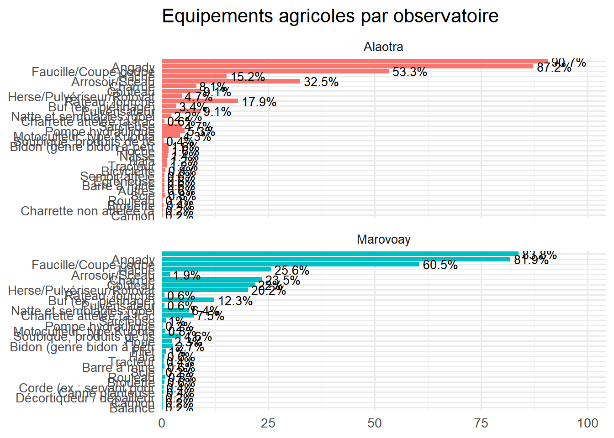
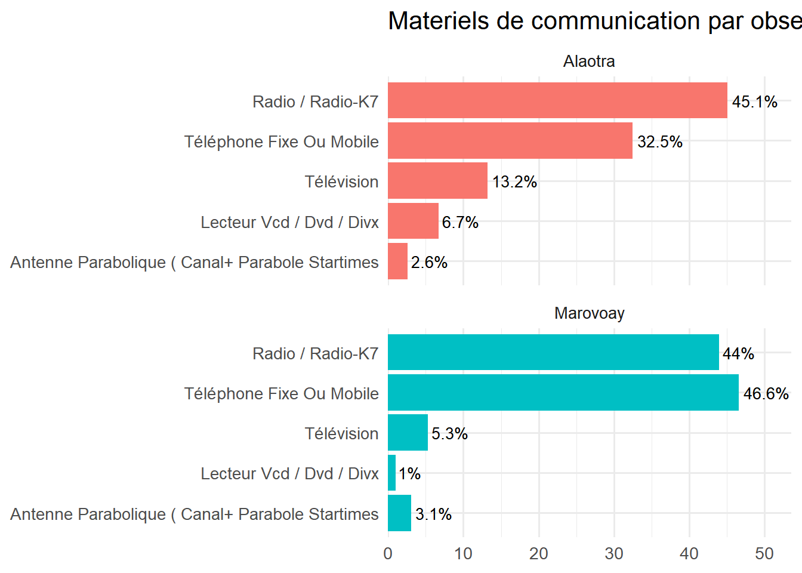
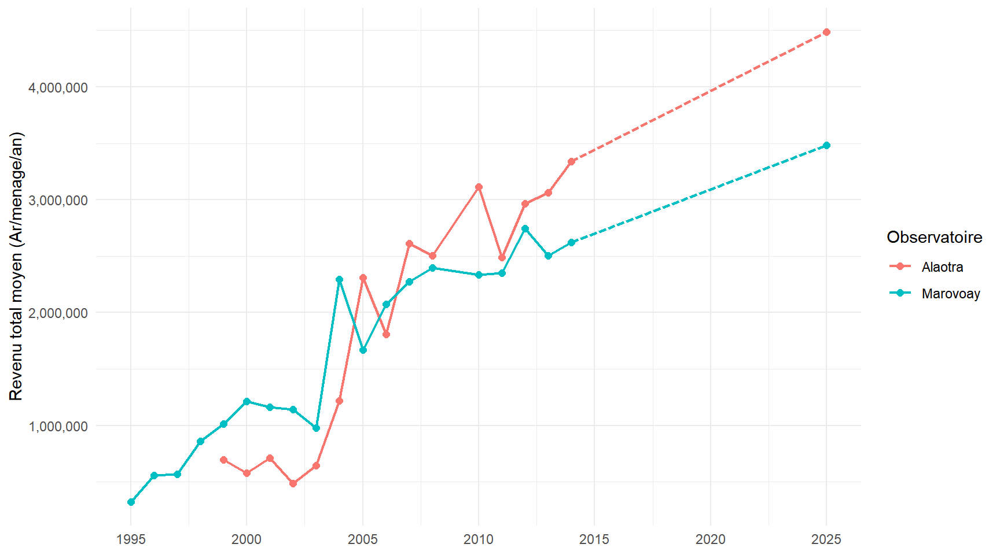
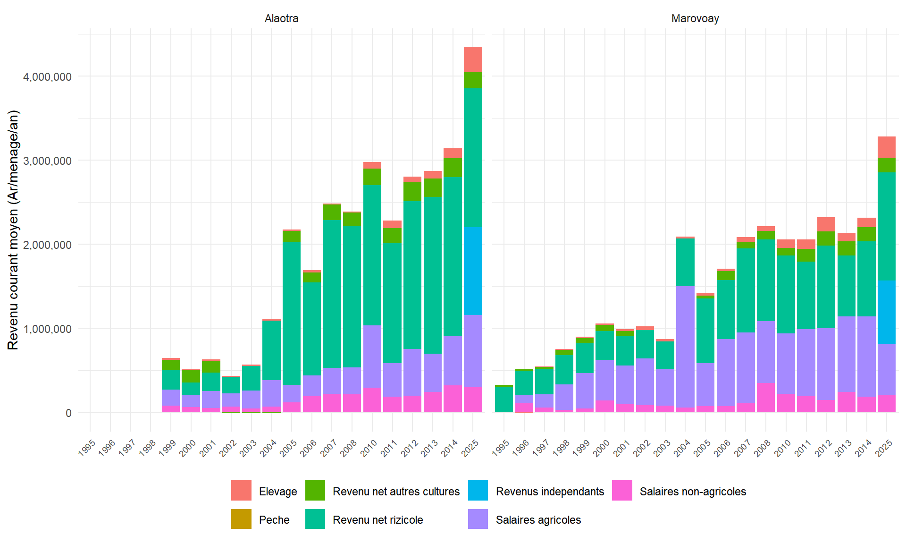
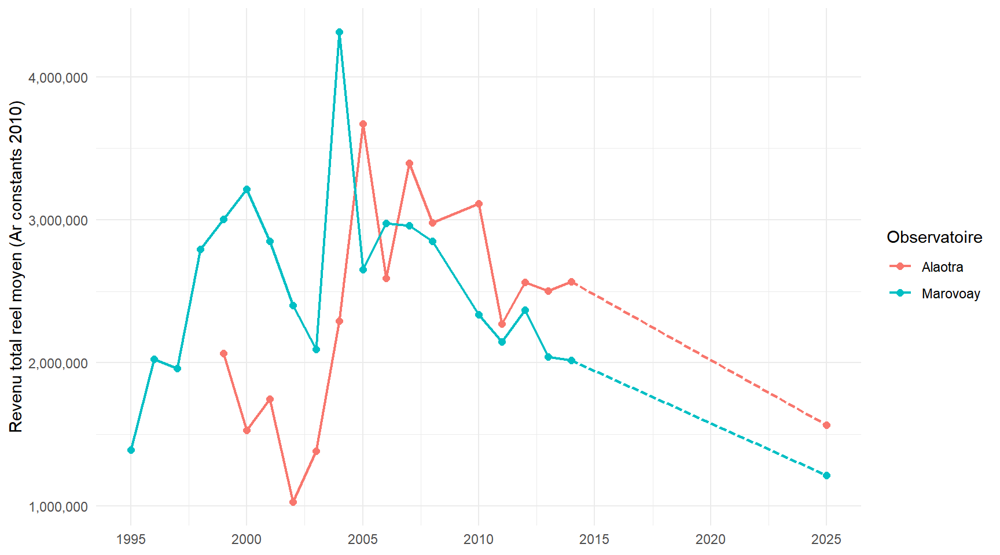
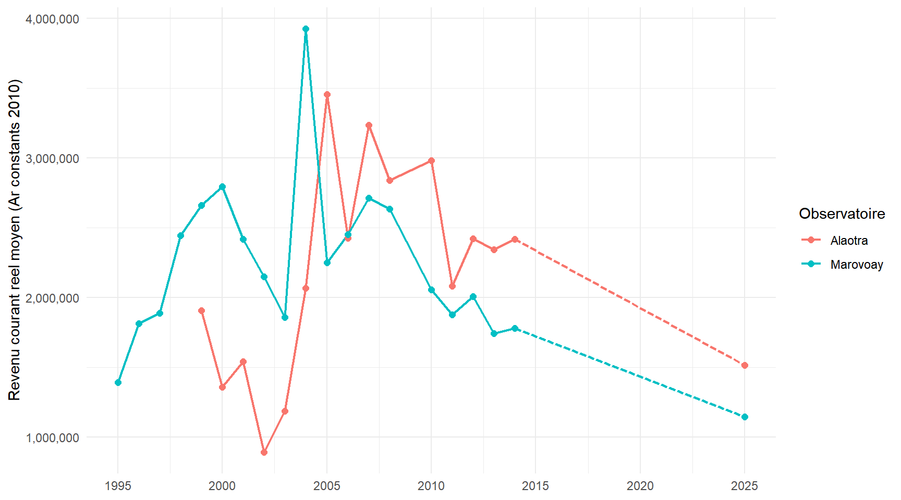
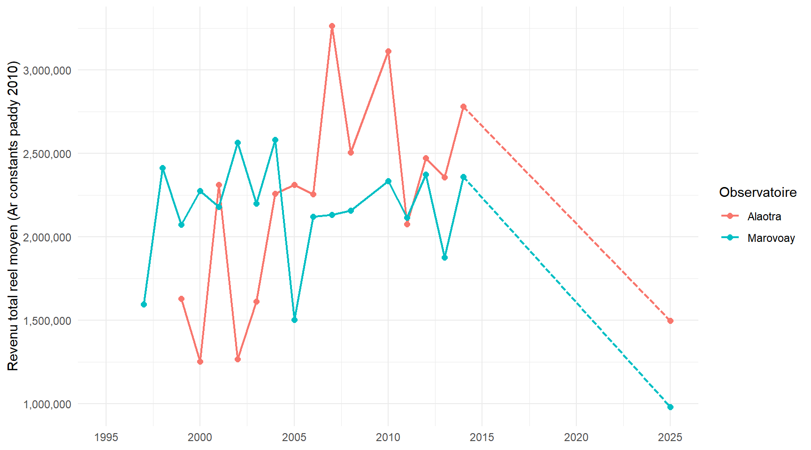
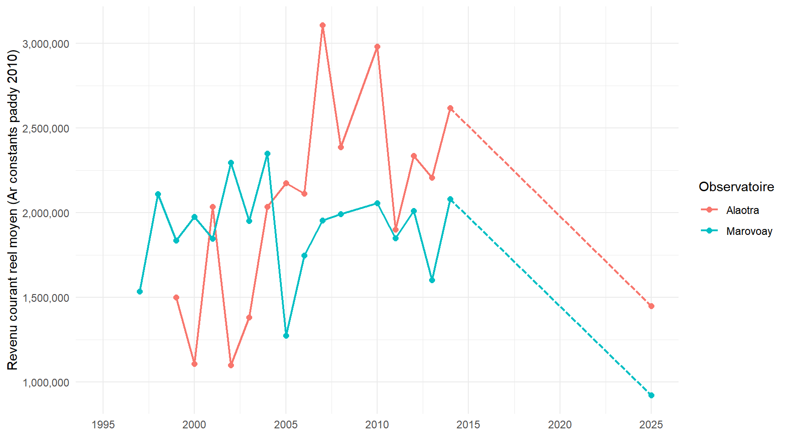

table_equip |>ggplot(aes(x =reorder(Equipement, pct_menages), y = pct_menages, fill = Observatory)) +geom_col(show.legend =FALSE) +coord_flip() +facet_wrap(~Observatory, ncol =1, scales ="free_y") +geom_text(aes(label =paste0(pct_menages, "%")), hjust =-0.1, size =3.5) +scale_y_continuous(expand =expansion(mult =c(0, 0.15))) +labs(title ="Equipements agricoles par observatoire", x =NULL, y =NULL) +theme_minimal(base_size =13)

3.2.3 Materiel de communication audiovisuelle et telecommunication
Code
comm_vars <-c("v5", "v8", "v9", "v20", "v11")comm_labels <-tibble(v_var = comm_vars,Type =vapply(res_v[comm_vars], function(x) { lab <-iconv(var_label(x), from ="latin1", to ="UTF-8")if (grepl(":", lab)) lab <-sub(".*?:\\s*", "", lab)str_squish(str_to_title(lab)) }, character(1)))comm <- res_v |>select(j5, all_of(comm_vars)) |>left_join(obs, by ="j5") |>pivot_longer(all_of(comm_vars), names_to ="v_var", values_to ="value") |>filter(value ==1) |>left_join(comm_labels, by ="v_var") |>count(Observatory, Type) |>mutate(pct =round(n /sum(n) *100, 1), .by = Observatory)comm |>gt(groupname_col ="Observatory") |>tab_header(title ="Materiels de communication audiovisuelle et telecommunication") |>cols_label(Type ="Equipement", n ="N", pct ="%") |>fmt_number(columns = n, decimals =0) |>fmt_number(columns = pct, decimals =1) |>style_table()
Materiels de communication audiovisuelle et telecommunication
Equipement
N
%
Alaotra
Antenne Parabolique ( Canal+ Parabole Startimes
15
2.6
Lecteur Vcd / Dvd / Divx
39
6.7
Radio / Radio-K7
264
45.1
Téléphone Fixe Ou Mobile
190
32.5
Télévision
77
13.2
Marovoay
Antenne Parabolique ( Canal+ Parabole Startimes
16
3.1
Lecteur Vcd / Dvd / Divx
5
1.0
Radio / Radio-K7
224
44.0
Téléphone Fixe Ou Mobile
237
46.6
Télévision
27
5.3
Source : Enquête auprès des OR 2025
Code
comm |>make_bar_obs(title ="Materiels de communication par observatoire")

3.3 Transferts sortants
Le fichier res_t2 recense les transferts envoyes par les menages a des personnes exterieures au foyer. Chaque ligne correspond a un destinataire. Les variables cles sont le type de transfert (t21a), le lieu de residence du destinataire (t41), le poids de riz envoye (t42, en kg) et la valeur totale (t21d, en Ar).
Figure 3.2: Lieu de residence des destinataires de transferts
3.4 Revenu
Les revenus presentes ici sont des revenus annuels par menage, calcules sur la periode de reference (PR) de la campagne 2025. Le revenu total (revtot) se decompose en revenu courant (revcou) et revenu exceptionnel (revexcept).
Le revenu courant agrege sept composantes :
les salaires agricoles (revsec) : remuneration du travail salarie agricole ;
les salaires non-agricoles (revppal) : remuneration du travail salarie hors agriculture ;
les revenus independants (rev_indep) : revenus des activites liberales et artisanales non-agricoles ;
le revenu net rizicole (rev_riz) : valeur de la production de riz moins les charges ;
le revenu net des autres cultures (rev_cu) : meme logique pour les cultures non-rizicoles ;
le revenu de l’elevage (revel) : ventes d’animaux et produits d’elevage ;
la peche (revpeche).
Le revenu exceptionnel regroupe les rentes foncieres, les autres revenus, le travail HIMO, la decapitalisation et les transferts recus.
Code
source("utils/calc_incomes_all_years.R")inc <-compute_income_year(2025) |>left_join(obs, by ="j5")
Revenu courant et revenu exceptionnel moyens par menage (Ar/an)
Campagne 2025
Observatory
Revenu courant
Revenu exceptionnel
Revenu total
Part courant (%)
Alaotra
4,349,257
138,771
4,488,029
96.9
Marovoay
3,280,758
199,888
3,480,646
94.3
Source : Enquête auprès des OR 2025
3.4.5 Menages a revenu negatif ou nul
Certains menages presentent un revenu courant negatif, principalement en raison de charges agricoles superieures aux produits (mauvaises recoltes, couts d’intrants eleves).
Code
inc |>summarise(`Nb menages`=n(),`Revenu courant <= 0`=sum(revcou <=0, na.rm =TRUE),`% <= 0`=round(mean(revcou <=0, na.rm =TRUE) *100, 1),`Revenu total <= 0`=sum(revtot <=0, na.rm =TRUE),.by = Observatory ) |>gt() |>tab_header(title ="Menages a revenu courant ou total negatif ou nul") |>style_table()
Menages a revenu courant ou total negatif ou nul
Observatory
Nb menages
Revenu courant <= 0
% <= 0
Revenu total <= 0
Alaotra
507
10
2.0
5
Marovoay
519
10
1.9
5
Source : Enquête auprès des OR 2025
3.5 Evolution des revenus nominaux depuis 1995
Les observatoires de Marovoay et d’Alaotra disposent de series longues permettant de suivre l’evolution des revenus sur trois decennies. Les donnees couvrent 1995-2008 et 2010-2014 pour Marovoay, 1999-2008 et 2010-2014 pour Alaotra, ainsi que la campagne 2025 pour les deux. Les annees 2009 et 2015-2024 ne contiennent pas ces observatoires. Le trait pointille materialise l’absence de donnees.
Code
trends |>make_trend_plot(revtot_mean, "Revenu total moyen (Ar/menage/an)")

Evolution du revenu total moyen par menage (Ar courants)
Evolution du revenu courant moyen par menage (Ar courants)
Code
# Note: certaines composantes (rev_cu en 2002-2004) sont negatives en raison# de charges superieures aux recettes. On utilise geom_col qui gere# correctement les valeurs negatives (barres sous l'axe zero).trends |>select(year, Observatory,`Salaires agricoles`= revsec_mean,`Salaires non-agricoles`= revppal_mean,`Revenus independants`= rev_indep_mean,`Revenu net rizicole`= rev_riz_mean,`Revenu net autres cultures`= rev_cu_mean,Elevage = revel_mean,Peche = revpeche_mean) |>pivot_longer(-c(year, Observatory), names_to ="Composante", values_to ="Montant") |>ggplot(aes(x =factor(year), y = Montant, fill = Composante)) +geom_col(position ="stack") +facet_wrap(~Observatory) +scale_y_continuous(labels =label_comma()) +labs(x =NULL, y ="Revenu courant moyen (Ar/menage/an)", fill =NULL) +theme_minimal() +theme(axis.text.x =element_text(angle =45, hjust =1, size =7),legend.position ="bottom")

Evolution des composantes du revenu courant moyen (Ar courants)
3.5.1 Deflation et indices de prix
La comparaison des revenus sur longue periode necessite de tenir compte de l’inflation. Nous utilisons ici l’IPC national publie par la Banque Mondiale (indicateur FP.CPI.TOTL, base 2010 = 100). Cet indice est calcule a partir d’un panier de consommation urbain ; il ne reflete donc qu’imparfaitement l’evolution des prix en milieu rural. Pour 2024-2025, non encore publies par la Banque Mondiale, l’IPC est extrapole a +9 % par an.
Note
Une prochaine version de ce rapport integrera un IPC regional (Boeny pour Marovoay, Alaotra-Mangoro pour Alaotra), extrait des series de l’INSTAT ou des enquetes EPM, afin de mieux capter l’inflation locale.
Evolution de l’IPC national Madagascar (base 2010 = 100)
3.5.2 Prix median du paddy et comparaison avec l’IPC
Le prix de vente median du paddy, calcule a partir des ventes declarees par les menages (dc24 dans res_dc21), fournit un indicateur complementaire de l’inflation locale.
Code
trends |>make_trend_plot(prix_paddy_median, "Prix median du paddy (Ar/kg)")
Comparaison de l’IPC national et de l’indice du prix du paddy (base 100 en 2010)
3.5.3 Revenus reels (deflates par l’IPC national)
Les revenus nominaux sont convertis en Ariary constants (base 2010) en divisant par l’IPC national. Ceci permet d’evaluer l’evolution du pouvoir d’achat, sous reserve des limites du deflateur urbain.
Code
trends |>make_trend_plot(revtot_real, "Revenu total reel moyen (Ar constants 2010)")

Evolution du revenu total reel moyen par menage (Ar constants 2010, IPC)
Code
trends |>make_trend_plot(revcou_real, "Revenu courant reel moyen (Ar constants 2010)")

Evolution du revenu courant reel moyen par menage (Ar constants 2010, IPC)
3.5.4 Revenus reels (deflates par le prix du paddy)
Le prix du paddy, produit central de ces economies rizicoles, offre un deflateur alternatif plus proche de la realite locale que l’IPC national. Les revenus sont ici exprimes en equivalent-paddy a prix 2010, c’est-a-dire divises par l’indice du prix median du paddy de chaque observatoire (base 2010 = 1). Ce deflateur est propre a chaque observatoire.
Code
trends |>make_trend_plot(revtot_paddy, "Revenu total reel moyen (Ar constants paddy 2010)")

Evolution du revenu total reel moyen par menage (Ar constants paddy 2010)
Code
trends |>make_trend_plot(revcou_paddy, "Revenu courant reel moyen (Ar constants paddy 2010)")

Evolution du revenu courant reel moyen par menage (Ar constants paddy 2010)
3.6 Evolution des conditions d’habitat (1997-2025)
Les donnees sur l’habitat permettent de suivre l’evolution de la source d’eclairage (acces a l’electricite) et de la source d’eau principale sur la periode couverte.
Code
if ("pct_elec"%in%names(habitat_trends)) {ggplot(mapping =aes(x = year, y = pct_elec, colour = Observatory)) +geom_line(data = hab_solid |>filter(!is.na(pct_elec)), linewidth =0.8) +geom_line(data = hab_gap |>filter(!is.na(pct_elec)), linewidth =0.8, linetype ="31") +geom_point(data = habitat_trends |>filter(!is.na(pct_elec)), size =2) +scale_x_continuous(breaks =seq(1995, 2025, 5)) +scale_y_continuous(limits =c(0, NA)) +labs(x =NULL, y ="% de menages avec electricite", colour ="Observatoire") +theme_minimal()}